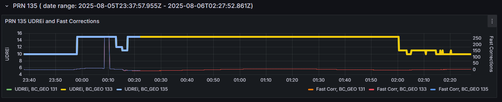
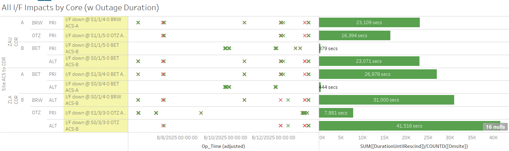
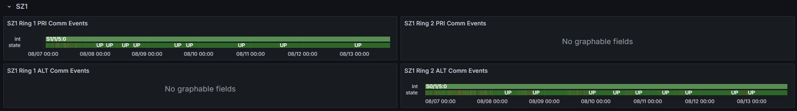

Weekly Highlights 20250806-20250813
8/5 - G30-135 GEO went Don't Use -- No Switchover
- 8/5 23:58 - G30-135 GEO went Don't Use due to CCC
trip -- related to KPA:
loose connector on the KPA output of the unit they were repairing last night caused interference; GEO back to the floor after ~2 hours

8/6 - ZDC PCU-A Audible Alarm
- 8/6 00:25 - ZDC WRE-A to Maintenance Mode due to
ATSS advised WAAS OPS that WRE-A PCU is in alarm status-- ref LIR 1031341824; Control Powered and restored to Normal at 8/6 01:08 - 8/7 14:24 - ZDC WRE-A to Maintenance Mode to clear audible WRE-A PCU alarm by manual reset -- ref LIR 185138221; Control Powered and restored to Normal at 8/7 15:23
8/6-8/13 - ZHU WRE Cabinets Down for Power Work
- 8/6 02:35 - ZHU WRE-C to Maintenance Mode and
Control Powered OFF for
Protective Shutdown for replacing elect transfer switches-- ref LIR 184535121; restored to Normal at 8/6 06:15 - 8/12 02:26 - ZHU WRE-A to Maintenance and Control
Powered OFF;
Protective Shutdown for replacing elect transfer switches-- ref LIR 184535021; restored to Normal at 8/12 05:05 - 8/13 01:32 - ZHU WRE-B to Maintenance and Control
Powered OFF for
replacing elect transfer switches-- ref LIR 184535121; restored to Normal at 8/13 04:29
8/6-8/13 - L1/L2 Bias Errors
- 8/6 02:32 - YYR L1/L2 Bias Alarm
- 8/6 07:48 - MSD L1/L2 Bias Alarm (coincident with comm fault)
- 8/7 15:07 - YYR L1/L2 Bias Alarm
- 8/7 19:14-15 - MMX / MPR / MSD / MTP L1/L2 Bias Alarm (coincident with comm fault)
- 8/8 02:26 - YYR L1/L2 Bias Alarm
- 8/9 03:24 - YYR L1/L2 Bias Alarm
- 8/10 02:00 - YYR L1/L2 Bias Alarm
- 8/11 03:08 - YYR L1/L2 Bias Alarm
- 8/12 02:07 - YYR L1/L2 Bias Alarm
- 8/12 17:52 - MTP L1/L2 Bias Alarm
8/7 - MTP WRE Bias Error
- 8/7 21:09 - MTP WRE-A/C alarmed with SE 729 WRE Bias Err
- 8/8 19:48 - MTP WREs A/C Restarted to address WRE Bias alarm; both WREs restored to Normal at 8/8 20:17
Various Comm Impacts
* Only captures major / long-term comm outages
CM1 Comms
- 8/6 16:41 - CM1 Ring 2 PRI comms flapping; last event cleared at 8/6 23:05 (~1877 seconds total)
- 8/7 18:10 - CM1 Ring 2 PRI comms flapping; last event cleared at 8/7 22:48 (~892 seconds total)
- 8/11 17:38 - CM1 Ring 2 PRI comms flapping; last event cleared at 8/11 22:57 (~551 seconds total)
- 8/12 16:33 - CM1 Ring 2 PRI comms flapping; last event cleared at 8/12 22:26 (~3102 seconds total)
- 8/13 15:59 - CM1 Ring 1 ALT / Ring 2 PRI comms down hard; both lines cleared at 16:05 (~340 seconds)
- 8/13 17:02 - CM1 Ring 1 ALT / Ring 2 PRI comms down hard; both lines cleared at 18:26 (~5037 seconds)
- 8/13 18:36 - CM1 Ring 2 PRI comms flapping until CM1 Ring 1 ALT / Ring 2 PRI comms down hard...

MX Sites
- 8/6 07:49 - MSD Ring 1 comms down hard; line cleared at 8/6 07:59 (~9m 55s)
- 8/7 18:58 - MMD Ring 1 comms down hard;
line cleared at 8/7 23:39 (~4h
41m)
- 8/7 19:14 - ZTL COR-A Port for MX Ring 1 Reset; no affect on MMD Ring 1
- 8/7 19:14-15 - MMX / MPR / MSD / MTP L1/L2 Bias Alarm
- 8/8 09:59 - MTP Ring 1 comms down hard; line cleared at 8/8 19:19 (~9h 19m)
- 8/12 01:47 - MMD Ring 1 comms down hard -- ref LIR 1035516424; line cleared at 8/12 15:29 (~13h 42m)
Alaska Sites
- 8/6 08:39 - OTZ Ring 2 PRI comms down hard; line cleared at 8/6 08:41 (~130 seconds)
- 8/6 08:53 - BRW Ring 1 PRI / Ring 2 ALT + BET Ring 1 PRI / Ring 2 ALT comms took a ~35 second hit
- 8/6 08:57 - OTZ Ring 2 PRI comms down hard; line cleared at 8/6 09:22 (~1510 seconds)
- 8/7 09:33 - BET Ring 1 PRI / Ring 2 ALT + BRW Ring 1 PRI / Ring 2 ALT + OTZ Ring 1 PRI / Ring 2 ALT comms down hard; all lines cleared at 8/7 10:49 (~4650 seconds)
- 8/9 15:36 - CDB Ring 1 comms flapping; last event cleared at 8/9 15:54 (~898 seconds total)
- 8/9 23:57 - BET Ring 1 ALT / Ring 2 PRI comms flapping; both lines cleared at 8/10 00:05 (~123 seconds total)
- 8/10 03:23 - BET Ring 1 ALT / Ring 2 PRI comms flapping; both lines cleared at 8/10 03:35 (~169 seconds total)
- 8/12 07:03 - BET / BRW / OTZ comms impacted by
MR-210880-- ref LIR 1133849932; some comms restored at 8/12 07:26 (~1362 seconds), but OTZ Ring 2 ALT / BRW Ring 2 ALT did not restore...- 8/12 07:36 - Comms back down hard; some comms restored at 8/12 09:42 (~7545 seconds), but OTZ Ring 2 ALT / BRW Ring 2 ALT still down hard...
- 8/12 14:06 - Reset ZLA COR-B Router to address OTZ / BRW comms; ZTL C&V reported SE 700 No C&V in Normal Mode which rescinded after a few seconds and multiple GUSes reported SE 500 Comm Status Change at the same time; all lines restored at 8/12 14:14 (~25834 seconds for OTZ Ring 2 ALT / BRW Ring 2 ALT)
- 8/13 04:30 - OTZ Ring 2 PRI comms flapping; last event cleared at 8/13 07:26 (~6963 seconds total)
- 8/13 07:04 - BET / BRW / OTZ comms impacted by
ISR 0813-1212-- ref LAD 1036388624; all lines cleared at 8/13 10:43 (~13182 seconds); same sites + JNU impacted again at 8/13 10:48; all lines cleared again at 8/13 10:52 (~280 seconds)

SZ1 Comms
- 8/6 10:17 - SZ1 Ring 1 PRI / Ring 2 ALT comms
flapping...
- 8/6 16:25 - SZ1 Ring 1 PRI comms last event cleared (~589 seconds total)
- 8/7 01:25 - SZ1 Ring 2 ALT comms last event cleared (~3139 seconds total)
- 8/7 03:24 - SZ1 Ring 2 ALT comms flapping; last event cleared at 8/8 00:03 (~2627 seconds total)
- 8/7 04:27 - SZ1 Ring 1 PRI comms flapping; last event cleared at 8/8 00:12 (~1029 seconds total)
- 8/8 02:59 - SZ1 Ring 2 ALT comms flapping infrequently; last event cleared at 8/8 18:14 (~634 seconds total)
- 8/8 04:44 - SZ1 Ring 1 PRI comms flapping infrequently; last event cleared at 8/8 12:05 (~127 seconds total)
- 8/9 10:51 - SZ1 Ring 2 ALT comms flapping; last event cleared at 8/9 20:10 (~566 seconds total)
- 8/10 13:26 - SZ1 Ring 2 ALT comms flapping; last event cleared at 8/10 17:41 (~232 seconds total)
- 8/11 14:40 - SZ1 Ring 2 ALT comms flapping; last event cleared at 8/11 16:54 (~314 seconds total)
- 8/12 21:16 - SZ1 Ring 2 ALT comms flapping infreqently; last event cleared at 8/12 21:56 (~84 seconds total)

Other Sites
- 8/12 04:12 - ZOB Ring 1 ALT / Ring 2 PRI comms
down hard for
MR-208888-- ref LIR 1027766824; both lines cleared at 8/12 04:37 (~1481 seconds) - 8/12 05:20 - YWG Ring 1 PRI / Ring 2 ALT + ZNY Ring 1 PRI / Ring 2 ALT comms flapping; all lines cleared at 8/12 05:28 (~72 seconds total)
7/21/25 YYR Ring 1 Comms
- 7/21 11:44 - YYR Ring 1 comms flapping with extended outages... -- ref LIR 1020579524
- 7/21 14:50 - YYR Ring 1 comms down hard...
6/25/25 OTZ Ring 1 ALT Comms
- 6/25 18:35 - OTZ Ring 1 ALT comms down
hard...
ISR 0625-3787-- ref LIR 1004589824
6/25/25 Brewster Comms Down Hard...
- 6/25 09:09 - BR1 Ring 1 ALT / Ring 2 PRI + BR2 Ring 1 ALT / Ring 2 PRI comms down hard...
- Targeting new circuit implementation on 7/22..
11/6/24 YFB Ring 2 Down Hard...
YFB requires satcom upgrades by NavCanada to restore... ref LIR 892056924
- 11/6/24 18:48 - YFB Ring 2 down hard... both rings to YFB down hard...
5/11/23 Mexico Ring 2 Down Hard...
- 5/11/23 17:01 - MX Ring 2 SatCom upgrade begins; MX Ring 2 OFFLINE until upgrade troubleshooting is complete...
- Targeting network upgrade in CY26
List of current offline WREs
List of current offline WREs -- ref WAAS Status Monitor
All Depot shipments to Mexico are halted until the customs process can be finalized
Currently working to assess MX Inventory to determine equipment refresh and restoration needs...
- YYR WRE-B - 7/4/25-... - Freq Std failed -- ref LIR 1010395424
- MMD WRE-A - 3/31/25-... - Freq Std failed -- ref LIR 953873324
- MTP WRE-B - 11/18/24-... - Receiver inits failing -- ref LIR 898330924
- MMX WRE-A - 10/13/24-... - Freq Std failed -- ref LAD 879853824
- MPR WRE-B - 5/3/24-... - Inits failing -- looks like a bad freq std; due to shipping issues, there is no spare Freq Std and no ETA to recover WRE-B... -- ref LIR 44170821

Major Events


Core I/F Status

Comm Events

Mexico Comm Status